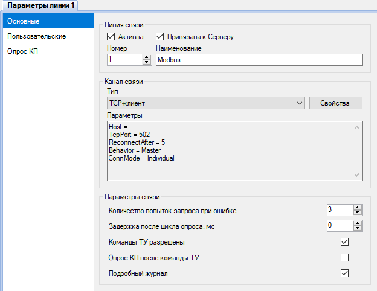
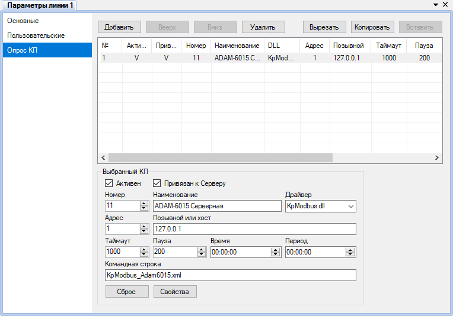
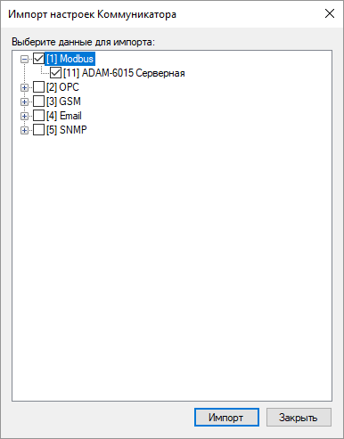
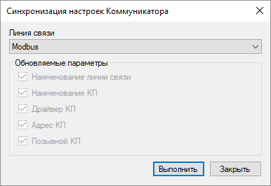

Взаимодействие с физическими или мнимыми устройствами выполняется программой Коммуникатор, которая, выступая в качестве ведущего (Master) или ведомого (Slave), производит опрос данных и передачу команд устройствам. Все устройства привязываются к своим линиям связи, которые не зависят друг от друга и опрашиваются параллельно.
Пользовательский интерфейс Коммуникатора, предназначенный для настройки, встроен в приложение Администратор. Настройка Коммуникатора выполняется как часть проекта.
На рис. 1 показан пример настройки основных параметров линии связи. Канал связи определяет, с помощью какого физического интерфейса или сетевого протокола производится обмен данными с устройствами. Поддерживаются следующие каналы связи: Последовательный порт, TCP-клиент, TCP-сервер, UDP. В некоторых случаях, если взаимодействие с устройствами реализовано в драйвере КП, канал связи следует оставить незаданным (например, при использовании драйвера OPC).
Если отправлять команды телеуправления (ТУ) устройствам не требуется, в целях безопасности рекомендуется снять галочку Команды ТУ разрешены.

Рис. 1. Основные параметры линии связи

Рис. 2. Параметры опроса КП
Порядок и параметры опроса КП на линии связи задаются на странице Опрос КП (рис. 2).
При снятии флажка Активна для линии связи данная линия будет полностью отключена со всеми относящимися к ней КП. При снятии флажка Активен для КП опрос и отправка команды соответствующему КП на линии связи будут отключены.
С помощью флажков Привязан к Серверу можно включить или отключить для определённых КП или для всей линии связи отправку данных программе Сервер. Если открыть страницу Общие параметры настроек Коммуникатора и снять флажок Взаимодействовать с Сервером, то взаимодействие Коммуникатора и Сервера будет полностью отключено. Эти возможности удобно использовать при тестировании новых подключаемых к системе устройств.
Если в свойствах КП поля Время и Период нулевые, то опрос КП производится непрерывно циклически. Если для КП указано время, а период равен нулю, то опрос выполняется один раз в сутки в указанное время. Если период не нулевой, то КП опрашивается периодически, начиная с заданного времени. Поля Таймаут и Пауза определяют длительность ожидания ответа от устройства и задержку после приёма данных. Поле Командная строка позволяет задать дополнительные параметры работы КП, которые определяются драйвером КП и указаны в его описании.
Кнопка Сброс позволяет восстановить параметры опроса КП по умолчанию, которые заложены в DLL, выбранной из списка. Если данная DLL поддерживает отображение свойств конкретного КП, то они открываются кнопкой Свойства или из контекстного меню элемента дерева, соответствующего КП. Для некоторых типов КП задаются общие глобальные свойства, в этом случае они редактируются по кнопке Свойства на странице Драйверы.
Чтобы импортировать линии связи и КП из базы конфигурации в Коммуникатор, в проводнике проекта нужно щёлкнуть правой кнопкой мыши на родительском узле линий связи или на узле конкретной линии связи и в контекстном меню выбрать пункт Импортировать. Форма импорта показана на рис. 3.

Рис. 3. Импорт настроек Коммуникатора
Функция синхронизации настроек (рис. 4) также вызывается из контекстного меню линии связи. Синхронизация позволяет обновить параметры существующих линий связи и КП по базе конфигурации, однако при этом могут утеряны параметры, введённые пользователем вручную.

Рис. 4. Синхронизация настроек Коммуникатора